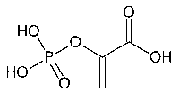

PEPThe substrate PEP (phosphoenol pyruvate) is used to fix carbon in C4 plants and CAM plants. In a reaction catalyzed by PEP-carboxylase, it forms oxaloacetate (OAA), a four-carbon acid. OAA is quickly converted to malic acid. 
|
Index Organic chemistry concepts Chemistry concepts Reference Karp Ch 3 Moore, et al. Ch 7 | ||
|
Go Back |
RuBP
RuBP (ribulose 1,5-biphosphate) is a five-carbon sugar which reacts with CO2 in the first step of the Calvin cycle for fixing carbon in photosynthetic systems. That reaction is catalyzed by the large enzyme rubisco . The catalytic reaction with RuBP and carbon dioxide through a short-lived intermediary almost instantaneously produces two molecules of glycerate 3-phosphate (3PGA).
|
Index Organic chemistry concepts Chemistry concepts Reference Karp Ch 3 | |||
|
Go Back |